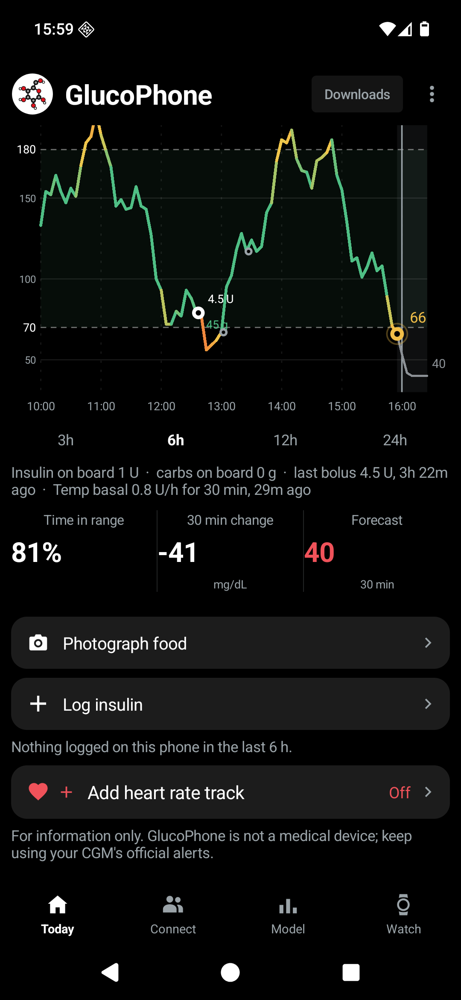
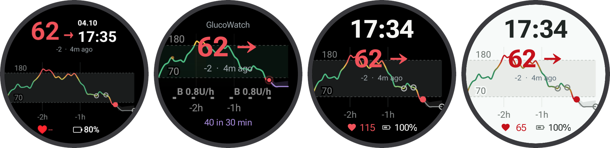
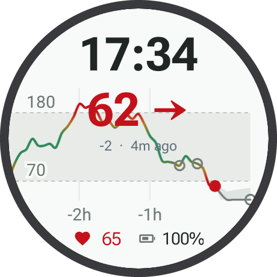
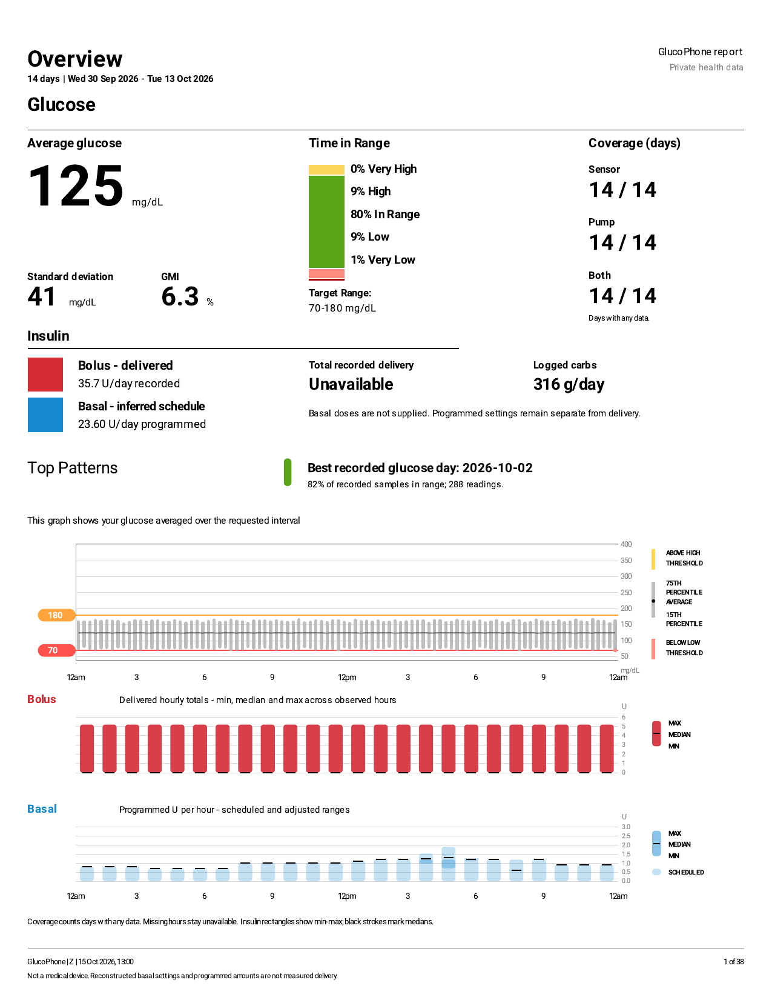

GLUCOSE PREDICTION · OPEN RESEARCH · APPS YOU CAN TRY
Your glucose. Your phone. Your next hour.
Connect your own CGM data to GlucoPhone and GlucoWatch, run compatible prediction models on your phone, and help benchmark human forecasting in our Sugar Sugar study.
Look at three hours of glucose history, then draw your prediction for the next 60 minutes. Compare it with the real sensor readings and get your accuracy score. Your results help researchers measure human forecasting performance against machine learning models.
For adults 18+, with or without diabetes or a CGM. About 15–20 minutes. Ethics clearance: University Medicine Rostock, A 2026-0064. Read the participant information and give consent on the study website.
The Sugar Sugar browser interface, shown in an example game.
01Read the last three hours02Draw the next hour03See your accuracy
02 / THE RESEARCH
Glucose forecasting, 30 to 120 minutes ahead.
Our research includes the SugarOne transformer forecaster and experiments with JEPA encoders for CGM sequences. We compare models across forecast horizons, distinguish familiar from unseen people, and separate past-only forecasts from models with announced future inputs.
LOOKING AHEADIllustrative trace
Glucose historyNowForecast horizon
A concept illustration of forecasting, using synthetic values.
Four horizons. One evaluation protocol.
The numbers below come from our local MetaboNet evaluation of a past-only ensemble. Switch the horizon to see how prediction error changes as the model looks further ahead.
9.34%
MARD at 30 minutes Local benchmark · lower is better
A past-only research ensemble on the MetaboNet sandbox test set. These development results are not clinical validation or a ranking against other teams.
How to read this result
MARD is mean absolute relative difference between forecasts and reference glucose. This row pools 2,648,987 target observations at each horizon and includes both familiar and new people. Model: Blend-EW-4run-CITRASrefitx2-TFTrefitx2-pastonly-s42s45-mv1. Input: past observations only. Four-horizon average: 16.41%. Source: the local research leaderboard reviewed 19 October 2026. Performance depends on the dataset, population and forecast horizon.
GlucoPhone generated this report for the activity on 17 October 2026. It aligns glucose, heart rate, estimated grade-adjusted pace and elevation on the same timeline, with insulin context alongside the activity.
21.88 kmDistance
5h 48mActivity duration
69Glucose readings
01Glucose and heart-rate traces over the same interval
02Elevation behind the charts, with pace and heart-rate zones
03Time in range, insulin records and clearly labelled estimates
The report distinguishes recorded bolus from basal insulin calculated from rates. Calculated insulin is an estimate, not independently measured delivery.
Real activity report generated by GlucoPhone. Click to read it at full size.

ANDROID + WEAR OS

Actual app screenshots. Synthetic demo data.
GLUCOPHONE + GLUCOWATCH
Glucose, forecasts, meals and insulin. On your own devices.
AVAILABLE NOW AS A DEVELOPMENT & RESEARCH PREVIEW
Use your own Dexcom Share or Nightscout data in GlucoPhone, our Android glucose dashboard. Import a compatible ONNX model and run forecasts locally on your phone. GlucoWatch brings your readings, trends and phone-generated forecasts to a Wear OS watch face and tiles. The phone also works on its own, and the watch can fetch readings directly.
01Connect Dexcom Share or your own Nightscout
02Run compatible open-source prediction models on your own data
03Log meals, photos and insulin alongside glucose history
04Export sensor and pump history as CSV or PDF reports
05Import our released models or your own compatible ONNX model
Android 10+ for GlucoPhone. Wear OS 4+ for GlucoWatch. No project server or Google Play Services dependency. Research preview, not a medical device: keep your official CGM app and alarms, and do not use forecasts for treatment decisions.

A light theme for your watchGlucose history and a forecast in a Wear OS tile.

History you can take with youCSV exports and printable reports from the phone app.
GET THE RESEARCH PREVIEW
Choose how to install.
The phone app works on its own. Add the watch app and face when you want glucose on your wrist.
01 / ANDROID PHONE
Install with Obtainium
Use Obtainium to install GlucoPhone from GitHub and check for updates. Select the phone APK from the release.
Add github.com/GlucoseDAO/glucowatch and set the APK filter to ^glucowatch-phone-.*\.apk$. Obtainium installs the phone app; it does not install the watch packages.
Download the Android package, install GlucoPhone, and connect your own Dexcom Share or Nightscout data. Select a compatible prediction model on the phone’s Model tab.
Building a product. Sharing as much as we reasonably can.
THE OPEN-SOURCE WORK
Code, research and community.
GlucoseDAO’s public work includes glucose forecasting tools, CGM data conversion, the Sugar Sugar study software, and the Apache-2.0 GlucoPhone and GlucoWatch apps. You can inspect the code, report issues and contribute on GitHub.
Our open-science work was awarded a $50,000 milestone-based BGI Nexus grant in the SingularityNET ecosystem.
Alongside the open-source work, we are developing a startup around glucose prediction. We want to turn the research into useful products and build a sustainable organisation behind them.
We are committed to opening as much as is reasonable as we develop the business. Existing public repositories retain their stated licences. We welcome conversations with research partners, product collaborators and investors.
Yes. Sugar Sugar welcomes adults with and without diabetes or a CGM, and offers public sample data. GlucoPhone and GlucoWatch start with synthetic demo data, so you can explore them without connecting a glucose account.
Can I use the app to make treatment decisions?
No. Glucowatch and GlucoPhone are development and research previews, not medical devices. Continue using your official CGM app and alarms, and follow your care team’s guidance.
Where can researchers and funders learn more?
Explore the BGI-supported open-source work, the research results and the Sugar Sugar study. Email glucosedao2024@gmail.com to discuss research, evaluation or support.